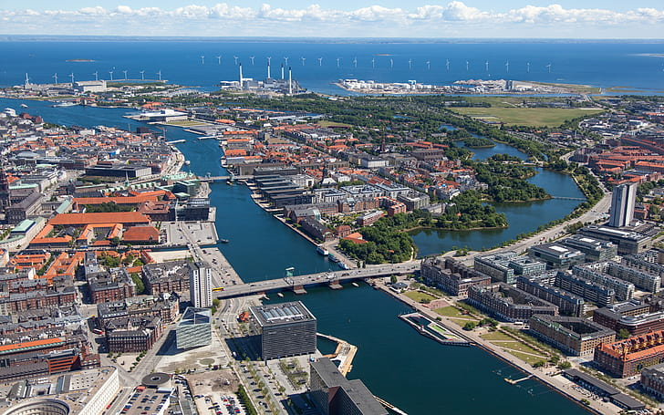
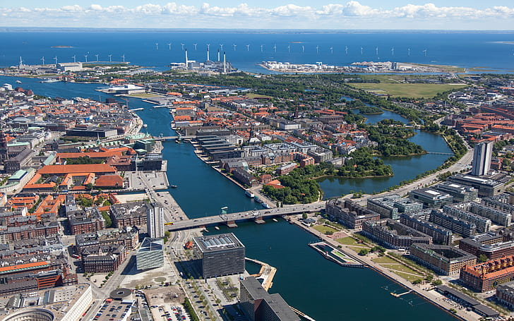

Noruega
¿Es parte de la Unión Europea?
Noruega NO es un Estado miembro de la Unión Europea, PERO indirectamente lo es por diversos convenios, ya que cuenta con la libre circulación de personas porque se acogió al programa de Espacio Económico Europeo. Vivir y trabajar en Noruega es algo muy atractivo ya que lleva varios años ocupando el primer puesto entre los países del índice de Desarrollo Humano de la ONU.
Oferta de empleo: Relativa
Los trabajadores asalariados gozan de un alto grado de igualdad de género y de buen equilibrio entre la vida laboral y el tiempo de ocio. La oferta de empleo en Noruega es relativa, decimos esto ya que hay ciertos requisitos básicos a cumplir para poder hacerte de un lugar en los puestos de trabajo de dicho país.
Para poder trabajar Noruega:
- * Es casi OBLIGATORIO tener conocimiento del idioma nativo (NORUEGO). Si bien la mayor parte de la población de ese país habla también inglés, para la mayoría de los trabajos te pedirán un buen dominio de noruego.
- * Para tomar un trabajo, quien te contrate deberá aclarar puesto ofrecido, el salario, la cantidad de horas de trabajo semanales y la duración del contrato.
- * La paga y las condiciones laborales no deben ser menores a las estipuladas en convenios colectivos de trabajo en vigencia o las escalas salariales que se manejen en cada rubro o industria.
A modo de recomendación podemos aconsejar que si no contas con un dominio leve del idioma noruego no te envalentones a buscar trabajo en este país ya que en trabajos muy básicos podrás aplicar sabiendo solo inglés. Cuentan con un paro de él 4%. Tienen sueldos muy elevados, pero pagan bastante en impuestos.
¿Como vivir en Noruega?
Para poder vivir y trabajar en noruega es de carácter obligatorio contar con un permiso de residencia por trabajo Si no te sentís con los requisitos para emigrar a este país podes probar buscando: Agencia Noruega de empleo y bienestar Work in Norway.

Ubicación |
Dinamarca
¿Es parte de la Unión Europea?
Si. Es miembro de la Unión Europea desde el año 1973, opta por no integrarse al sistema económico del euro, miembro del espacio Schengen desde 2001.
Oferta laboral: Abundante, Bien calificada
Para poder trabajar en Dinamarca:
... es importante cumplir con una burocracia que, aunque puede parecer tediosa por momentos, vale la pena ya que nos hará ver que estamos ingresando a un país muy bien organizado. Por esto será importante registrarse ante las autoridades de este Dinamarca y demostrar con una serie de trámites que no vamos a presentarle fugas a su sistema de gobierno. Por esto puedes acusar que estas buscando trabajo o ya tienes un contrato. A su vez puedes informar que tu estadía es a fin de realizar estudios y que con tus propios recursos te vas a mantener o que vas a vivir con alguna persona.
¿Cómo vivir en Dinamarca?
Los requisitos para ingresar a Dinamarca y poder vivir allí son:
- * Contar con un pasaporte valido.
- * Disponer de los medios económicos para solventar tu estadía.
- * Justificar tu estadía con documentos como donde te hospedaras y viaje de vuelta.
- * No estar registrado como persona indeseable en el Sistema de Información Schengen (SIS II)
- * Debes contar con un permiso de Residencia y registrarte en el llamado Registro de Ciudadanos de la Unión Europea.
Si eres ciudadano europeo es importante que recuerdes que, aun así, si tu estadía en dicho país supera los 3 meses, será obligatorio que justifiques que te encuentras en Dinamarca realizando una búsqueda activa de trabajo.
 

Ubicación |
Portugal
¿Es parte de la Unión Europea?
Si, es país miembro de la UE desde el 1 de enero de 1986. Su sistema económico como en otros tantos países se destaca por el EURO desde el 1 de enero de 1999 y es conocido como espacio Schengen desde el 26 de marzo de 1995.
Oferta laboral: Media/Alta (Según situación)
Para poder trabajar en Portugal
Para poder vivir y trabajar en Portugal es obligatorio el visado de turista, los requisitos para tramitarlo son los siguientes: Pasaporte vigentes y con una página completa en blanco, formulario de inscripción, una fotografía, documentos que avalen su solvencia económica para el tiempo que dure la estancia, entre otros, aunque este último año con los cambios que se vienen realizando los cuales son de público conocimiento vas a poder contar con la facilidad de que al llegar a Portugal más allá de que no tengas ciudadanía por antecedentes europeos, vas a poder contar con la ciudadanía portuguesa luego de vivir en el país y trabajar allí durante 5 años, se puede comenzar los trámites para obtener la residencia permanente en Portugal y al obtener esta ciudadanía no solo les permitirá trabajar sin ningún tipo de visa o permiso en ese país, sino que también en toda la comunidad de la Unión Europea.
Ubicación |
Italia
¿Es parte de la Unión Europea?
Si. Es país miembro de la Unión Europea desde 1958, miembro de la zona del euro desde 1999, miembro del espacio Schengen desde 1997.
Oferta laboral: Media
Para poder trabajar en Italia:
Para poder trabajar en Italia es necesario contar con tus papeles al día, si eres
miembro Unión Europea no vas a tener grandes problemas a la hora de conseguir
trabajo, eso sí, depende de los puestos que estes buscando. Si no eres miembro
de la UE tendrás la posibilidad también de conseguir algunos trabajos temporales
para sustentarte hasta que regularices tu situación y puedas contar con un
trabajo en blanco. Esta última opción no es la más recomendable.
Por motivos de similitud con España y la mayoría de los países latinoamericanos,
Italia es una muy buena opción si necesitas reiniciar tus metas y comenzar de
cero en otro lado.
¿Cómo vivir en Italia?
Para poder vivir de forma legal en Italia es importante contar con tu ciudadanía europea, si eres descendiente de italianos podrás presentar tus documentos y los documentos de tu predecesor en algún consulado de Italia que mas se ajuste a tus características para que luego de un tiempo aproximado de 2 a 6 meses tu tramite sea aprobado y obtengas tu documento como italiano.
Ubicación |
Suiza
¿Es parte de la Unión Europea?
Suiza no es miembro de la Unión Europea, se percibe como un país mas neutral que otros como Austria, Irlanda o Suecia. La adhesión a la UE diluiría la neutralidad de suiza. La marca de neutralidad es utilizada por Suiza para promover sus “buenos oficios” y posicionar Ginebra como una gran ciudad anfitriona.
Oferta laboral: Alta (relativa)
Para poder trabajar en Suiza:
Si bien Suiza no es parte oficialmente de la UE, cuenta con diversas
posibilidades que te otorgoran la oportunidad de trabajar y vivir en su país.
Por medio de Visas de estudio y trabajo podrás alcanzar la oportunidad de
asentarte en Suiza por lo menos 1 año.
De igual manera es muy complejo realizar los tramites de las visas o tarjetas de
residencia para residir en el pais alpino, ya que por el motivo antes mencionado
de su neutralidad permanente no será tan fácil aunque cuentes con Ciudadania
Europea.
Es importante dejar en claro que hace algunos años, se firmo un acuerdo con la
Union Europea el cual te permite si sos ciudadano europeo poder obtener el
permiso de residencia de una forma un poco mas sencilla, si no sos ciudadano la
burocracia es un considerablemente mas engorrosa. Para poder residir en este
pais puedes apoyarte en la Visa; la cual en caso de que sea tu carta a jugar,
deberás solicitarla en el pais de origen, ya que las mismas nunca caducan en
Suiza. Tambien existen los denominados permisos de residencia los cuales son
diversos en su funcionalidad con relación a la duración de la estadía en Suiza
(Por estudio, ofertas laborales, reagrupaciones familiares) Los ciudadanos de la
Union Europea no necesitan este permiso de residencia.
Ubicación |